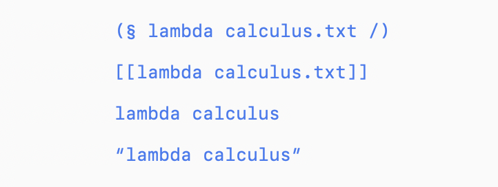
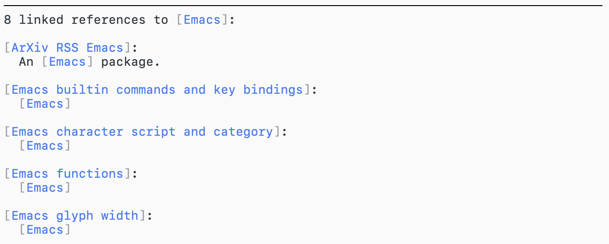
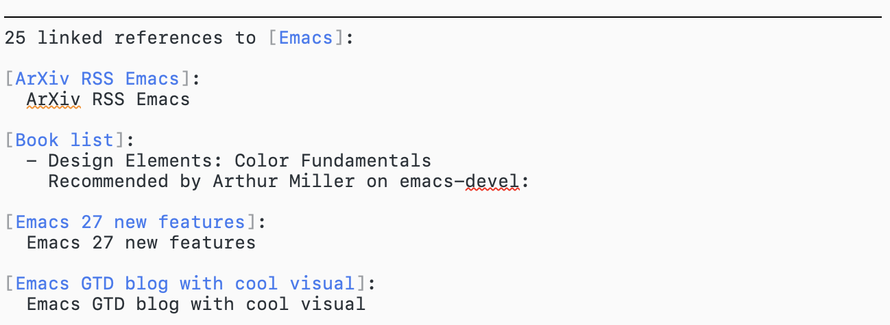

Simple (Back) Links in Any File
Table of Contents
This is the first post of my new blog series “site-lisp packages” where I introduce some packages in my site-lisp directory. Currently, I’ve collected 20+ packages, surely someone will find some of them helpful.
Recently I started to use Deft as a replacement for Apple’s Notes.app to take some technical notes. Meanwhile, Zettelkasten and org-roam has caught my eye. These links and back-links are certainly useful for organizing my notes.
Some cool guy has already written a package, zetteldeft, that combines deft and back-links. However, I don’t really like his use of ids. Why don’t we just use filenames to identify a file? And back-links doesn’t need a database like org-roam does, for my simple use-cases, I can just use grep.
1 Introducing bklink.el
bklink.el is my cheap version of org-roam that only provides two features:
- make links to other files.
- show back-links from other files.
It works in any text file format, and uses filenames as links, no ids or databases. However, it only works in these situations:
- All the files are in the same directory, no sub-directories.
- There aren’t a huge number of files.
These assumptions make the implementation simpler, and suits my notes well.
Specifically, bklink.el provides three functions:
bklink-insertinserts a link to another file in the directory.bklink-show-back-linkshows a small buffer below the current buffer, containing back-links for this file.bklink-renameto rename all links that points to this file.
The links inserted looks like “file name”, while the actual text is [{file name.ext}].
One thing I think I did right is the back-link buffer: it automatically follows the main buffer as you move/hide/switch to the main buffer. So I never need to manually close or move the buffer. The back-link buffer in org-roam annoys me a little, so I paid attention to get it right in bklink.el.
Here is a demo of bklink.el:
2 Implementation details
Because I made some assumptions on my notes, I can simplify the implementation:
- All the files are in the same directory, no sub-directories. So I can just use base filename as unique identifiers. This also means I can work in different directories in the same time without any conflict.
- We don’t have a huge number of files, so an async grep should be fast enough to get the back-links. In fact, even if there are too many files for grep to handle, I have a backup plan that adds cache files, so I’m not too worried about the future.
The links are formatted as [{filename.ext}], and displayed as “filename”. This format has several advantages:
- It doesn’t conflict with Org Mode’s link format. Although most of my notes are in plain text format, I do have some Org files in my notes.
- I don’t hide the delimiters, but render them as quotes. In my experience, hiding delimiters makes editing the text more difficult (think about links in Org Mode).
In fact, I didn’t start with this format. I started with one that’s similar to zetteldeft’s, and changed it several times:

The good thing about writing your own package is that not only can you write it to fit your specific need (like the assumptions I made on my notes), but also can you change the design anytime. (This is also why I don’t publish these small packages, I don’t want to be responsible for a stable user experience.)
Apart from the “sticky” back-link buffer (read more about it in Atomic Buffer), there aren’t much to talk about. Getting back-links is just calling grep in a sub-process and installing a sentinel that parses the stdout and inserts back-links into the back-link buffer. I also added highlight for URL links, so I can click on URL’s in my note.
The funny thing about renaming is that, there is no UNIX command that can I can write in one line, or even less than 10 lines, that searches & replaces text literally. So I ended up grepping files and replace with Emacs—I grep for a list of files that contains the link, writes them to a temporary file, start an Emacs process in batch mode, load bklink.el, load the temporary file, and call a replace function I defined in bklink.el on each file.
3 Show me the code
Here it is. In case I change my configuration, here is a local backup.
4 後日談：Back-link summary at the bottom
Someone drew some inspiration from bklink.el and wrote another roam package, gk-roam.el. It tries to mimic Roam Research better than org-roam. I like its back-link summary a lot: just like Roam Research, at the bottom of the buffer, you see a list of files that links to this file with surrounding context. I like it better than my current back-link window so I threw my back-link window away and replaced it with back-link summary.
What’s cool about this new back-link summary is that, even though you see it in the buffer like normal text, it is not saved to the file. So you can regard it as virtual text. Here is a demo:
Cool huh? This is done by adding a hook to write-file-functions, to which save-buffer calls to possibly delegate the work. In our hook we delete the back-link summary and saves to the file. And when we insert the summary, we suppress the modified flag so it looks like the buffer content is still in-sync with the file.
When we insert the summary:
(with-buffer-modified-unmodified ...)
In write-file-functions hook:
(save-excursion (let ((this-buffer (current-buffer)) (this-file (buffer-file-name))) (with-temp-buffer (insert-buffer-substring this-buffer) ;; Delete summary (write-region (point-min) (point-max) this-file)) (clear-visited-file-modtime) (set-buffer-modified-p nil) t))
5 後日談2：Include more links in the summary
After taking notes for a while, I found myself adding links as tags all over the place. I took a note about selective display:
selective display In Emacs, set-selective-display to N and Emacs only display lines with indent less than N.
And I start to tag this file with “Emacs”, “Emacs functions”, etc, so that this file appears in the back-link summary of “Emacs”. Not only is this tedious and error-prune (many files I forget to tag), but also kind of awkward. In my summary, instead of seeing the surrounding context (like a sentence), I see a bunch of “Emacs”:

How can we improve? Instead of searching only for links, I decide to add an option to also search for any occurrence of the filename in other files. So, besides searching for [{Emacs.txt}], we are also searching for plain Emacs. And the result is splendid: I get more matches, and some I wound’t thought to tag in the first place:

Admittedly, there are a bunch of links that just matches the title, still the advantage is clear. I don’t need to manually add a link each time I type “Emacs” (which is quite often) and can still get a back-link summary for it.
P.S. As you can see, I changed the appearance of links once again. Capricious, I know.